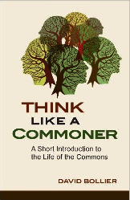

Governing a Book
As I said a couple of days ago, I’m helping a group of programmers put a book together. One question that always has to be answered in a collaboration like this is how decisions are made. Who decides which topics will be covered? Who decides when a chapter is done (or done enough)? How are disagreements about licensing and royalties resolved?
I’ve written before about how important it is for open source projects to make governance clear and about Martha’s Rules, which is my favorite lightweight approach to running projects in which most people agree on most things most of the time. The “Suffrage” section of that latter post says that people become voting members of the project when they are sponsored by an existing member and accepted by a majority vote of current members. It doesn’t explain how the initial voters are selected, and it implies (but doesn’t explicitly state) that each person has exactly one vote. Both issues need to be revisited for an edited collection with multiple contributors.
First, this book is about software design in a particular language. We therefore bootstrapped participation by putting out a call for contribution to that language’s community, and then inviting people from adjacent communities who might also have interesting things to say. The “we” in this case includes the language’s principal designer and me (in the role of editor). That has given us about fifteen people so far who seem serious about putting in the 30–40 hours it will take over several months to draft, polish, and merge the code and words for one chapter.
As first drafts of those chapters come in, those people will become the initial voting members of the project; once there are a dozen or so of them, they will vote (using Martha’s Rules) on further additions. If someone becomes unresponsive—i.e., if it looks like they’ve lost interest or can’t make time to finish their chapter—we will vote on suspending their voting rights.
The second question is whether everyone gets one vote. The simplest answer is “yes”, but what if three people are collaborating on one entry: does each person get one vote or does the chapter get one vote? Similarly, should someone who is contributing three chapters get three votes? Companies and co-operatives often award votes according to the number of shares held, so that people who have invested more in the organization’s success have a larger say in its governance. Even in civil democracies the “one person, one vote” rule is frequently violated: in the United States, for example, just 18% of the country elects 52% of its senators because Senate seats are apportioned by state regardless of population.
We therefore have (at least) three plausible options:
- One author, one vote.
- One chapter, one vote.
- Double majority: a proposal only passes if it is approved by a majority of contributors representing a majority of chapters.
Since all of our chapters so far have a single author, we plan to stick to the first option, What’s more important is recognizing that there are choices and that groups should make them consciously and explicitly.

David Bollier's Think Like a Commoner is a brief introduction to the notion of a commons: something managed jointly by a community according to rules they themselves have evolved and adopted. As Bollier repeatedly emphasizes, all three parts of that equation are essential: a commons isn't just a thing, like a shared pasture, but is necessarily also comprised of a community who share it and the rules they use to do so.
Nathan Schneider's Governable Spaces argues that most online communities have adopted implicit feudalism rather than democracy, which makes us more tolerant of autocratic tech CEOs and politicians. The book shows how such communities can learn from the past to become more democratic.